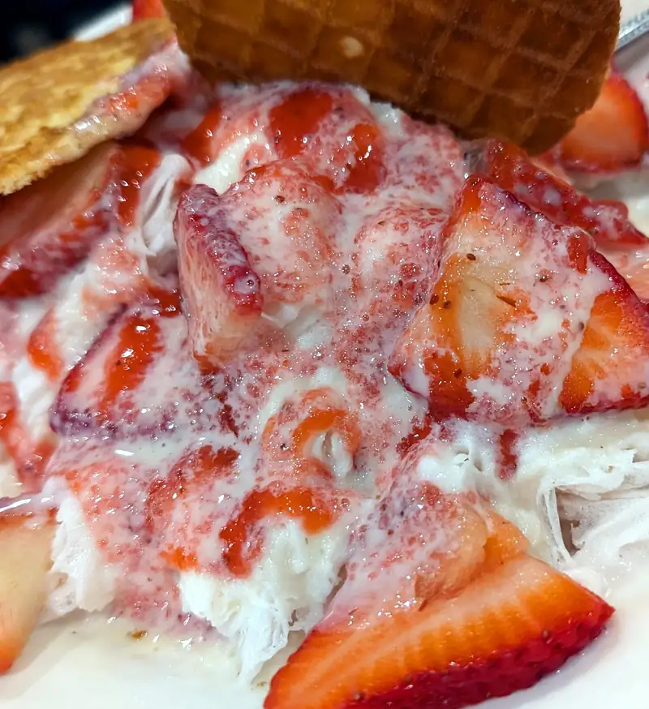

Restaurantes Jeng Chi
Hace alguno años recuerdo haber estado viendo un video donde salieron los "panes de sopa" de los chinos. Tu sabes, de esas cosas que uno se pone a ver mientras trabaja... y claro que fue un momento de "ah, ps voa probar eso" así que busqué y resulta que no-muy-lejos de nosotros estaba un lugar donde se especializan en ese tipo de panes. Fuimos, nos gustó... y... se nos olvidó su existencia, hasta hace un par de fines de semana que volvimos a ir a Jeng Chi y de nuevo, nos gustó y pues, todavía es muy pronto para decidir si se nos olvida o no :P ... la cosa es que está cerca de otros de nuestros favoritos que también son clásicos de Dallas: Kirin Court para los dim sum y un changarrito literalmente _mom and pop_ de un par de viejitos que atienden y hacen comida china muy buena: First Emperor así que si estamos de antojo de comida china, el Jeng Chi como que pasa a ser la 3er o 4ta o 5ta opción, la neta. Pero pues si quieres esos "juicy dumplings" como le dicen ellos, hasta ahorita, solamente ahí los consigues. Además de lo de las fotos, pedimos un platillo que se llama "chuleta con arroz" que era como chuleta de puerco empanizada, sí, con arroz blanco, pero con carne molida sazonada como con salsa de soya dulce o hoisin, hojas de mostaza cocidas y curtidas, tan bueno el platillo que no le tocó foto, al igual que la sopa de wonton de puerco que vo-ló!
Los tan-anticipados pancitos jugosos:
{kind=link}
Carne a la naranja (meh, si estuviera crujiente estaría mucho mejor)

Y para el postre, tienen unos como raspados, con frutas y lechera (leche condensada) al parecer muy buenos, porque también volaron!
 {kind=link}